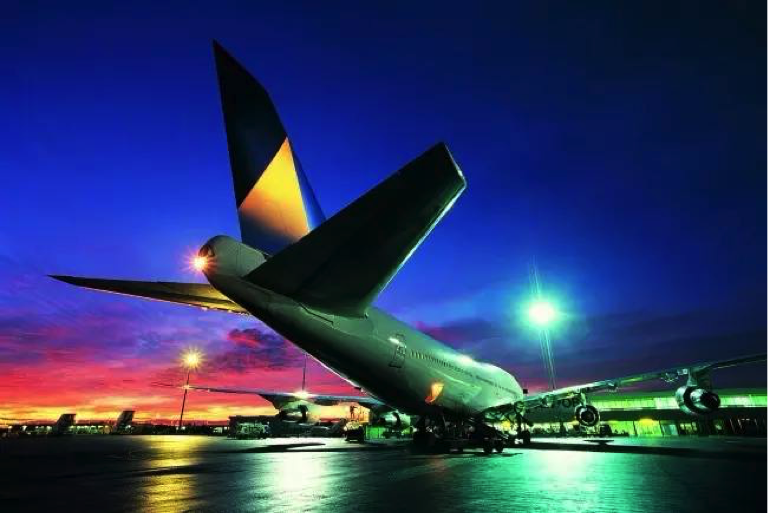
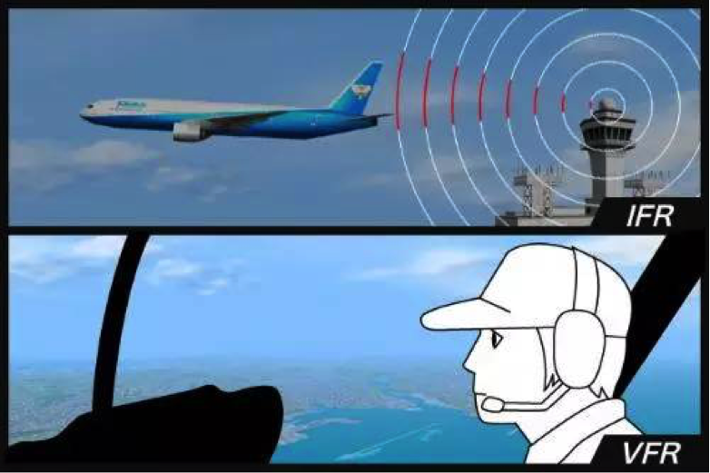
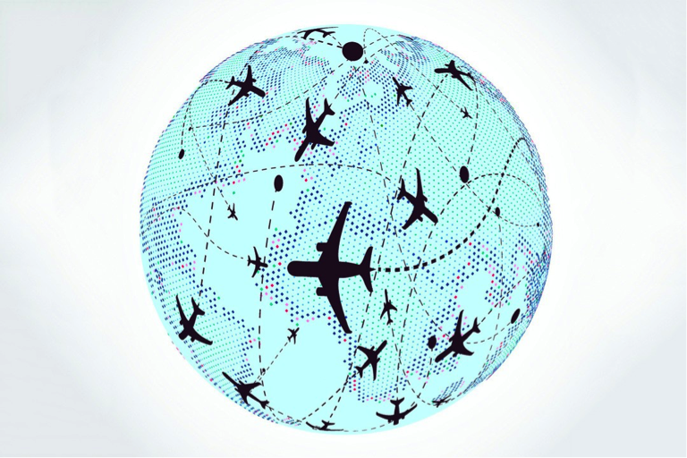

事故频发，谁来捍卫飞行秩序？
像上述这样由于指挥台与机组之间存在沟通疏漏所造成的飞行事故，在整体航空事故中的占比逐年攀升。指挥台作为飞机的眼睛，与机组进行及时、无间断的沟通也成为航空业的重中之重。

那么，如何在飞行期间保持良好的通讯状态呢？美国Harris国际通讯公司有他们的答案。Harris致力于向125个国家和地区的航空公司提供全球化的服务，年营业收入超过50亿美元。他们研发了Liberty-STAR语音通信系统，通过联想System x系列服务器搭建了IT基础架构，凭借可靠稳定的输出表现为航空通讯提供良好的沟通环境，成为捍卫飞行秩序的“超级英雄”。

覆盖全球让安全永不掉线
为了更好的对全球客户的业务进行支持，联想帮助Harris在中东、南非、南亚等站点共安装了16台24小时运行的System x 系列服务器及相应的备用设施。其中，联想System x3550系列服务器以复制功能为虚拟机提高稳健性，在保证运行平稳流畅的前提下，为关键交通环境容错环节的有序进行提供了强大的支持。不但保证了航空交通管制员与飞机通信师良好的沟通环境，还帮助工程师维护通信环境，让沟通的链接永不掉线。

操作简单管理员也能轻松Hold住
不仅如此，联想还为此系统配置了一键式管理功能，便于在管制员与飞机之间可以轻松配置基于角色的语音通信，操作界面与传统的电脑相同，大大节约了操作使用者的学习时间成本。此外，该设备还支持系统诊断，并会显示系统故障，以提醒管理员采取措施，满足行业标准及机场客户的需求。
双模拟技术保证每位旅客旅途平安
安全为先，联想为每一台System x 服务器配置了两台虚拟机，它们共用一套Liberty-STAR管理应用程序。如果其中一台虚拟机出现故障，应用程序会继续在另一个虚拟机上运行，不会出现任何中断或丢失数据的情况，完全不影响实时沟通，确保全体旅客的安全。
对于联想System x 系列服务器稳定、可靠的表现，Harris的工程师称赞有加：
“无论什么时候，我们都会使用System x 系列服务器来支持Stratus解决方案，我们一直信赖它。”
——Harris航空交通管制系统工程师Francis Deault